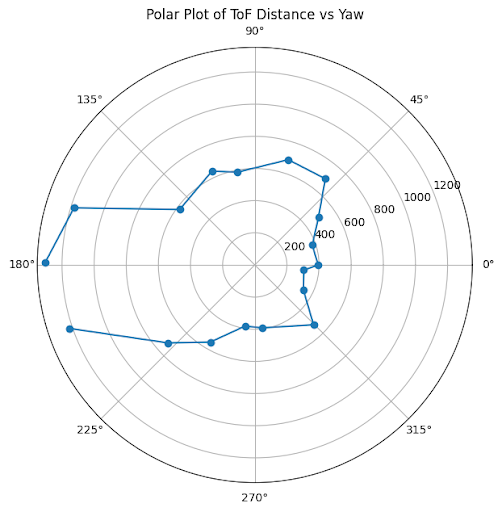
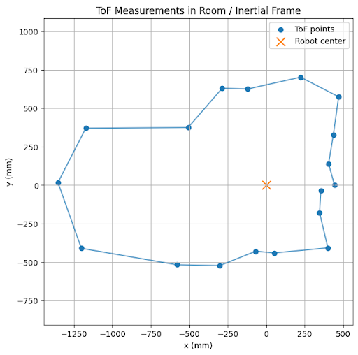
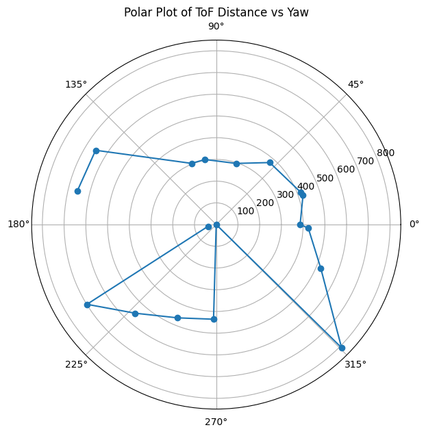
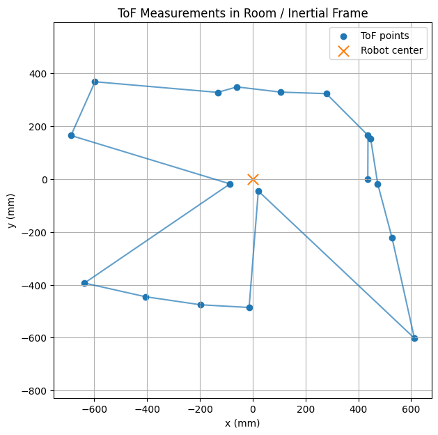
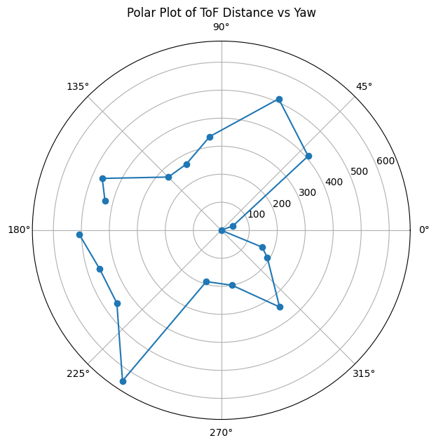
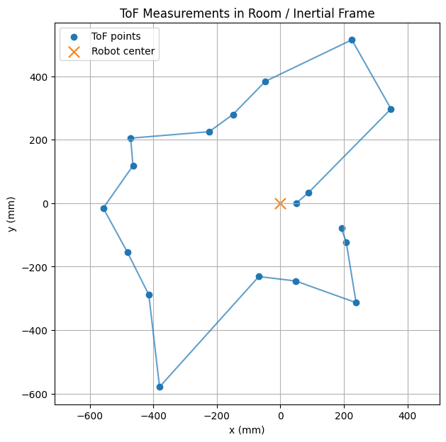
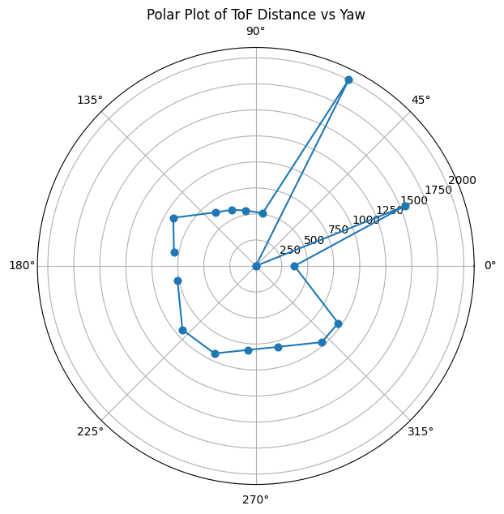
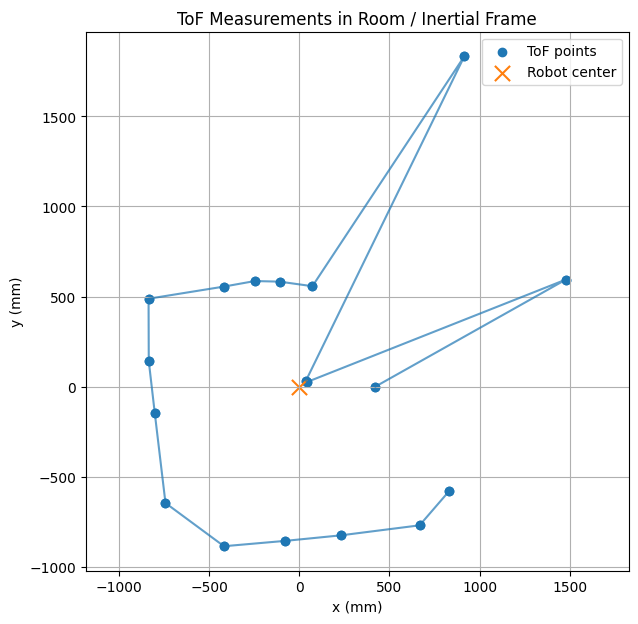
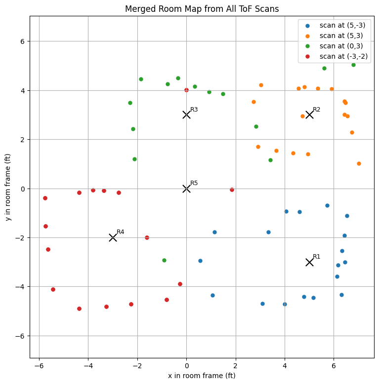
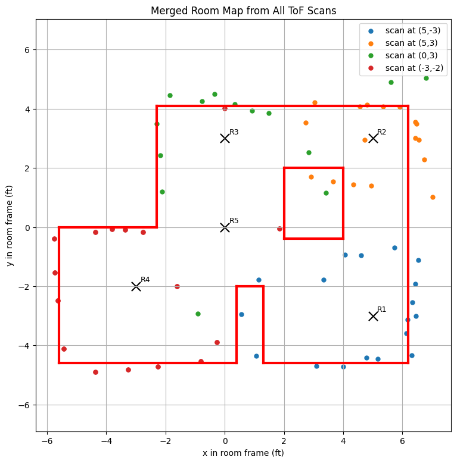

ECE 4160 – Fast Robots
The purpose of this lab was to map out a static room in the lab that we will use in the future for localization and navigation tasks. To achieve this I spun my robot around at different locations in the room and stoped incrementally to take tof measurements.
I decided to use orientation control as I believed it would give me more precise control over the robot's movement. It also allowed me to use code from previous labs. To get readings at a specific location, I had my robot repeatedly make small turns (20 degrees). After each turn it would h a distance measurement and then do the next turn untill completing a full 360 degrees. I was able to use my pi control to achomplish this and added 2 new commands to control the mapping process (START_MAPPING and SEND_MAP_DATA)
Since each turn has some error, I recorded the angular position along with the distance measurements. I used my dmp yaw values and always treated the robot's starting position as angle 0 (I oriented the robot to face the same direction for all positions). I used the following code to control this process of spining and collecting tof data. My pi_turn_until_done function is very similar to the helper pi_turn function I used in previous labs however instead of being a type void function, it returns a true if the robot has reached its target angle setpoint and false if it hasn't.
if (map_i == 0) {
while (!update_yaw_dmp()) {
delay(50);
}
target_yaw = wrap_angle(yaw_dmp);
}
bool reached = pi_turn_until_done(target_yaw);
if (reached) {
analogWrite(motorL1, 0);
analogWrite(motorL2, 0);
analogWrite(motorR1, 0);
analogWrite(motorR2, 0);
while (!distance_sensor_2.checkForDataReady()) {
delay(50);
}
int map_dist = distance_sensor_2.getDistance();
distance_sensor_2.clearInterrupt();
Serial.print("distance reading:");
Serial.println(map_dist);
Serial.print("angle reading:");
Serial.println(yaw_dmp);
m_distance[map_i/20] = map_dist;
m_yaw_pos[map_i/20] = yaw_dmp;
map_i += 20;
if (map_i >= 360) {
running_mapping = false;
car_is_on = false;
distance_sensor_2.stopRanging();
}
delay(2000);
while (!update_yaw_dmp()) {
delay(50);
}
target_yaw = wrap_angle(yaw_dmp + 20);
}
Next I ran this code with my car at all of the locations a few times to collect the necessary data.
I first plotted the data in polar coordinates and then converted them to the world frame. To do that, each point was transformed in two steps: first from the sensor frame to the robot frame, and then from the robot frame to the room frame. I used 2D homogeneous transformation matrices of the form T(x, y, θ) = [cos(θ) -sin(θ) x; sin(θ) cos(θ) y; 0 0 1], which combine a planar rotation and translation. The robot-to-world matrix placed the robot at its scan location in the room, while the sensor-to-robot matrix accounted for how the ToF sensor was mounted on the car. Since my ToF sensor was mounted about 50 mm in front of the center of the robot and pointed straight forward, I used an x-offset of 50 mm, a y-offset of 0, and a sensor angle of 0 degrees. Each ToF reading was represented in the sensor frame as [d, 0, 1]T, where d is the measured distance. The full transformation was pw = TwrTrsps, which converted every sensor measurement into a point in the room frame so that all scans could be plotted together. For each position/coordinate I ended up using the data that was the least noisy.








Next I added all of the mapped data into one graph

Finally I added lines to the mapped data

line_starts = [ (-5.6, -4.6), (1.3, -4.6), (6.2, -4.6), (-5.6, -4.6), (-5.6, 0.0), (-2.3, 0.0), (-2.3, 4.1), (0.4, -4.6), (0.4, -2), (1.3, -2), (2,2), (2,-.4), (4,-.4), (4,2), ]
line_ends = [ (0.4, -4.6), (6.2, -4.6), (6.2, 4.1), (-5.6, 0.0), (-2.3, 0.0), (-2.3, 4.1), (6.2, 4.1), (0.4, -2), (1.3, -2), (1.3, -4.6), (2,-.4), (4,-.4), (4,2), (2,2), ]
The lab allowed me to learn the process of learning how to create a map of an environment that is based of sensor data that a robot collects. The difficulties in this lab were mainly creating controlled small turns to allow the robot to fully scan the environment. There are some slight deviations that I made from my data (when drawing the lines) to correct my map towards what I know the actual map looks like. These deviations come from noise in my sensors, slight drift of angle values from dmp, the tof sensor not being perfectly at the center of my car, and my car not rotating perfectly around its axis.
Used ChatGPT for assistance with code to create graphs for the data